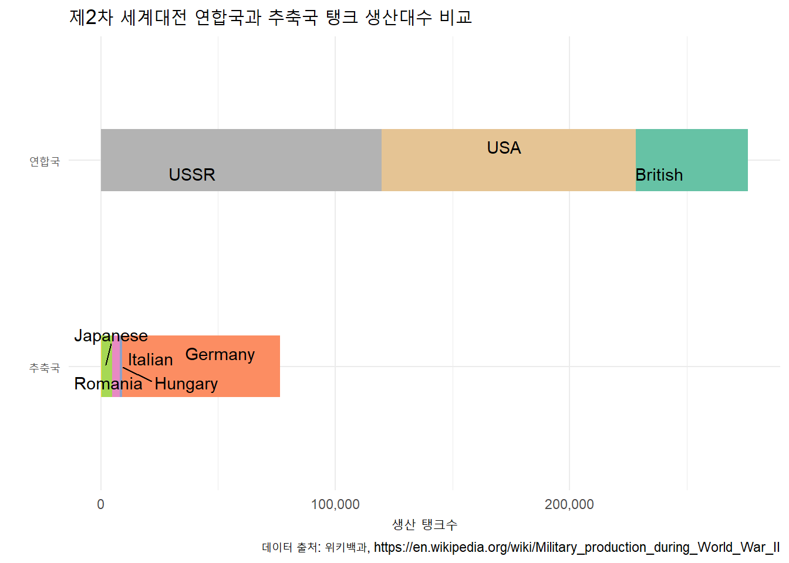
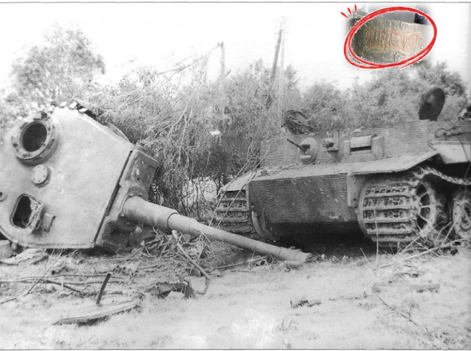

flowchart TB 1934 -->|"Pz.Kpfw. I (Panzer I)"| 1936 1936 -->|"Pz.Kpfw. II (Panzer II)"| 1937 1937 -->|"Pz.Kpfw. III (Panzer III)"| 1938 1938 -->|"Pz.Kpfw. IV (Panzer IV)"| 1942 1942 -->|"Pz.Kpfw. V Panther"| 1943 1942 -->|"Pz.Kpfw. VI Tiger I"| 1943 1943 -->|"Pz.Kpfw. VI Tiger II (King Tiger)"| 1944 1944 -->|"Jagdpanzer 38(t) Hetzer"| 1945 1945 -->|"Maus" | END
11 독일 탱크 문제
2차 세계대전에서 탱크는 전술적 전략의 중심 요소로 부상했다. 전격전(Blitzkrieg) 같은 기동 전술에서 빠른 전진과 방어선 돌파 능력은 전투흐름을 크게 바꿨다. 강한 화력과 갑옷 보호로 인해 탱크는 전선에서 공격 및 병력 지원에 매우 효과적이었고, 탱크의 존재만으로도 적의 사기를 떨어뜨리는 심리적 효과가 컸을 뿐만 아니라, 독일 Tiger와 Panther 탱크, 소련 T-34와 IS 시리즈와 같은 혁신적인 설계를 적용한 기술발전도 눈부셨다.
2차 세계대전 전후 독일에서 선보인 전격전의 핵심전력으로 활약한 탱크를 연도별로 정리하면 다음과 같다.
위키백과 Military production during World War II 웹사이트에서 제2차 세계대전 국가별 탱크 및 SPG 생산량을 확인할 수 있다. 독일이 팬저 및 타이거 등 고성능 탱크를 생산했지만 생산대수에서 연합국에 한참 밀린 것이 확인된다.
library(tidyverse)
library(rvest)
library(ggrepel)
tank_html <- read_html(x = 'https://en.wikipedia.org/wiki/Military_production_during_World_War_II')
tank_tbl <- tank_html |>
html_elements(".wikitable") |>
html_table() %>%
.[[5]] |>
janitor::clean_names() |>
select(contains(c('tanks', 'power'))) |>
select(탱크수= tanks_sp_gs, 생산국가=power ) |>
mutate(탱크수 = parse_number(탱크수)) |>
drop_na() |>
mutate(구분 = case_when(
생산국가 %in% c("British Empire", "USA and territories", "USSR", "Allies") ~ "연합국",
생산국가 %in% c("Germany and territories", "Hungary", "Romania", "Italian Empire",
"Japanese Empire", "Axis") ~ "추축국"
)) |>
filter(!생산국가 %in% c("Allies", "Axis")) |>
mutate(생산국가 = str_remove(생산국가, "( and territories)|( Empire)"))
tank_tbl |>
ggplot(aes(x = fct_reorder(구분, 탱크수), y = 탱크수, fill = 생산국가)) +
geom_col(width = 0.3) +
coord_flip() +
scale_y_continuous(labels = scales::comma) +
geom_text_repel(data = tank_tbl |> filter(구분 == "연합국"),
aes(label = 생산국가), position = position_stack(vjust = .4)) +
geom_text_repel(data = tank_tbl |> filter(구분 == "추축국"),
aes(label = 생산국가), position = position_stack(vjust = .4)) +
labs(x ="",
y = "생산 탱크수",
title = "제2차 세계대전 연합국과 추축국 탱크 생산대수 비교",
caption = "데이터 출처: 위키백과, https://en.wikipedia.org/wiki/Military_production_during_World_War_II") +
theme_minimal() +
theme(legend.position = "none") +
scale_fill_brewer(type = "qual", palette = "Set2")

11.1 중요성
제2차 세계대전에서 독일 탱크 생산대수의 정확한 추정은 연합국의 전략적, 전술적 결정 및 심리적 전쟁을 주도하는 데 결정적인 역할을 했다.
독일의 탱크 생산능력은 그들의 군사 능력과 전쟁 지속 능력을 나타내는 중요한 지표였다. 이를 통해 연합국은 한정된 자원을 어떻게 효율적으로 사용할지 결정할 수 있었다. 만약 독일이 대규모의 탱크를 적극적으로 생산 중이라는 정보를 획득하면, 연합국은 빠르게 자신들의 탱크 생산을 증대시키거나 대탱크 무기의 개발에 투자하는 등의 전략적 대응을 준비했다.
탱크 생산대수와 탱크종류는 독일군이 다음에 취할 전략과 전술을 예측하는 데 귀중한 정보를 제공했다. 이러한 정보는 전장에서의 우위를 확보하고 적의 움직임을 선제적으로 차단하는 데 도움을 줬고, 심리적 측면에서도 탱크의 생산 정보는 중요했다. 독일의 실제 탱크 생산 능력을 과소 평가하거나 과대 평가하는 것은 연합국의 사기와 전략에 큰 영향을 미쳤다.
전쟁이 종료된 이후에도, 독일의 탱크 및 기타 군사 장비의 생산 정보는 평화 협정의 조건을 결정하는 데 중요한 자료로 활용되었으며, 독일의 잠재적 군사 능력을 평가하고 장래의 안전 보장을 위한 조치를 결정하는 데 필수적인 정보자산이 되었다.
11.2 데이터 수집
제2차 세계대전 중 독일 탱크의 시리얼 번호 획득은 연합국의 미묘한 정보 수집 작업 중 하나였다. 전투 중 파괴되거나 포획된 독일 탱크들은 대부분 고유의 시리얼 번호가 달려있었으며, 시리얼 번호는 탱크 생산 순서와 일련번호를 나타냈기 때문에, 연합국은 이러한 번호를 꼼꼼히 수집했다. 파손된 탱크 부품에서도 이러한 번호를 발견할 수 있었고, 이를 통해 전체 탱크 생산 규모의 일부를 엿볼 수 있었다. 이런 정보들은 전쟁 중 독일의 탱크 생산 능력을 추정하는 데 매우 중요한 열쇠로 작용했다.

11.3 월별 탱크생산대수
제2차 세계대전 기간 독일 탱크의 생산 대수를 분석한 표에 따르면, 다양한 추정치와 실제 생산된 탱크의 수를 비교할 수 있다. 1940년 6월에는 통계적 방법을 통해 169대의 탱크가 생산되었다고 추정되었으나, 정보기관은 1,000대로 추정했다. 그러나 실제로는 122대만 생산되었다. 이어서 1941년 6월에는 통계적으로는 244대, 정보기관에서는 1,550대로 추정되었고, 실제로는 271대가 생산되었다. 마지막으로 1942년 8월에는 통계적 추정치가 327대, 정보기관의 추정치가 1,550대로 나왔으며, 실제 생산된 탱크는 342대였다. 이를 통해 보면, 통계적 방법으로 추정한 생산 대수가 정보기관의 추정보다 실제 생산량에 더 가까웠음을 알 수 있다.
| 년월 | 통계 추정 | 정보기관 추정 | 독일 생산대수 |
|---|---|---|---|
| 1940년 6월 | 169 | 1,000 | 122 |
| 1941년 6월 | 244 | 1,550 | 271 |
| 1942년 8월 | 327 | 1,550 | 342 |
11.4 통계 추정방법
MLE를 사용하여 독일 탱크의 총 생산 수를 추정하는 방법은 관측된 탱크의 일련 번호 간의 평균 간격을 기준으로 한다.
예를 들어, 탱크 \(k\) 대를 관측했을 때, 가장 큰 일련 번호가 \(m\)이면, 평균적으로 탱크 사이의 간격은 \(\frac{m}{k}\)이다. 이 간격을 기반으로, 번호 \(m\) 이후에 아직 관측되지 않은 탱크는 대략 \(\frac{m}{k}\) 대가 더 있을 것으로 예상된다.
이 정보를 토대로, 전체 탱크 수에 대한 추정치 \(N\)는 다음의 공식으로 구할 수 있다:
\[ N_{\text{추정치}} = m + \frac{m}{k} - 1 \]
독일군에서 5대의 탱크를 포획하였다고 상상해보자. 포획한 탱크의 일련 번호는 2, 5, 7, 20, 그리고 31이다. 여기서, 최대 일련 번호 \(m\)은 31이고, 포획된 탱크의 총 수 \(k\)는 5대이다.
이 정보를 사용하여 탱크의 총 생산 수 \(N\)을 추정하면:
\[ N_{\text{추정치}} = m + \frac{m}{k} - 1 = 31 + \frac{31}{5} - 1 \]
따라서, \(N_{\text{추정}}\)의 값은 36.2로, 총 탱크 수는 대략 36 또는 37대로 추정될 수 있다.